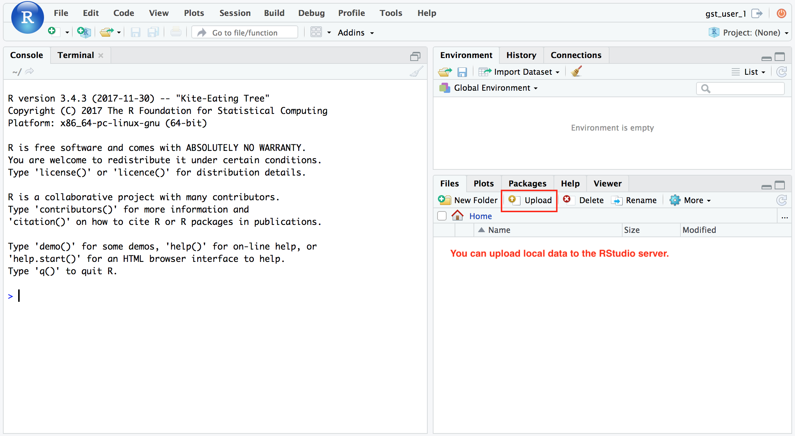

RStudio Server Account
Select an user account (row) from this google sheet and put your name on the right column to mark that this user account has been used.
Open the URL in the first row in a new browser tab (copy URL and paste in tab, hit [enter])
Use the upload button to upload local files to the Server.

You can use the code below to install R packages in the RStudio server.
dir.create('~/my-r-lib')
.libPaths('~/my-r-lib')
install.packages('ggplot2')Launch a Jetstream image with Docker installed on Jetstream. Then run the following to luanch an RStudio server.
sudo su
# docker pull rocker/rstudio
# docker run --name=gst_dv -d -p 80:8787 rocker/rstudio
docker pull mingchen0919/gst-dv-rstudio
docker run --name=gst_dv -d -p 80:8787 mingchen0919/gst-dv-rstudio# login to the rstudio container
docker exec -it gst_dv bash
# create users in the rstudio container
for id in $(seq 1 30)
do
echo "gst_user_${id}:passwd_user_${id}::::/home/gst_user_${id}:" | newusers
done